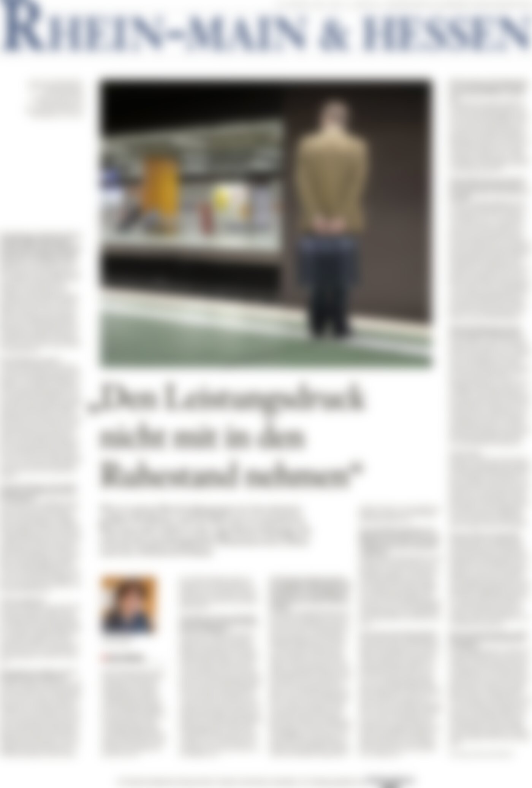

Frankfurt am Main · ein Archiv im Werden
Wie denken Menschen? Wie werden aus Geschichten Identitäten? Und warum suchen wir einander?
Simon Schaugg, Gründer von YOLD und Mitgründer von NeuHier — Psychologie und praktische Erfahrung im Aufbau von Gemeinschaft, zu Generationenaustausch, Einsamkeit und sozialem Ankommen.
An diesen Fragen arbeite ich — in der Psychologie, in Zeichnungen, am Klavier, im Schreiben und in Projekten mit anderen. Für mich sind das keine getrennten Fächer, sondern Werkzeuge, die alle auf dasselbe zeigen: die Komplexität dessen, wie wir die Welt erfahren.
Ich nähere mich diesen Fragen über verschiedene Medien — Forschung, Bild, Klang und Notiz — und versuche so, unterschiedliche Aspekte der Erfahrung und der Wirklichkeit selbst abzubilden.
Inhalt
fünf Stränge · ein LebenslaufÜber mich

Mich hat nie eine einzelne Disziplin interessiert, sondern der Mensch selbst — als denkendes, fühlendes und nach Sinn suchendes Wesen. Aufgewachsen in Heidelberg, in einer Familie mit Kunst, Musik und Sprache, gingen für mich Psychologie, Zeichnung und Klavier nie getrennte Wege: Sie sind unterschiedliche Sprachen für dieselbe Wirklichkeit. Auch meine heutige Arbeit — Forschung, Bild, Klang, Projekte wie YOLD und NeuHier — folgt dieser einen Frage: Wie entstehen Identität, Sprache und Gemeinschaft, und wie begegnen Menschen einander?
Im Fokus · F.A.S., Titelseite Rhein-Main & Hessen

„Den Leistungsdruck nicht mit in den Ruhestand nehmen."
Titelseiten-Interview in der Frankfurter Allgemeinen Sonntagszeitung darüber, was psychologisch geschieht, wenn nach Jahrzehnten im Beruf die Rolle wegfällt, die das Selbstbild getragen hat.
Interview auf faz.net lesen ↗Für Vorträge, Presseanfragen und Kooperationen — jederzeit erreichbar.

Simon Schaugg lebt und arbeitet in Frankfurt am Main — zwischen Psychologie, Bild und Klang. Kontakt.
s.schaugg@gmx.de